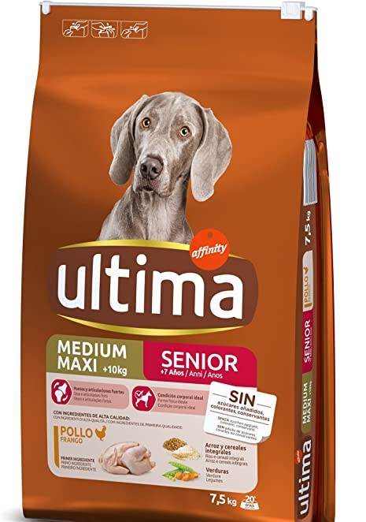
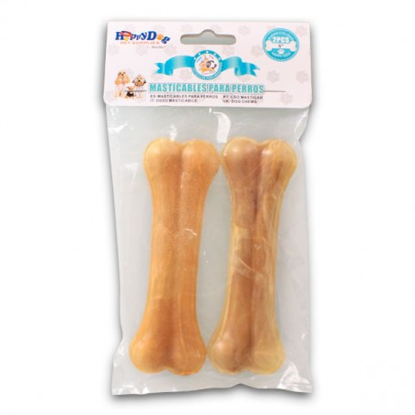
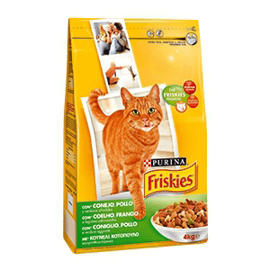

Nuestros productos de confianza

ultima Pienso para Perro Medium-Maxi Adulto con Pollo, Pack de 3 x 3 kg - Total 9 kg
- Huesos y Articulaciones Fuertes: gracias a minerales, vitamina D, antioxidantes
(vitaminas C, E), magnesio y colágeno natural procedente del huevo (membrana de huevo)
- Fácil de Digerir: Pollo y arroz, fuentes de proteínas e hidratos de carbono de fácil digestión

Hueso Prensado para Perros Fortalecedor de Dientes Stick Dental Dog Snack,
Hueso de Nudillos de Cuero Crudo, Hueso para morder, 7.6cm,18pcs
- Masticar aumenta la estimulación mental aliviando el aburrimiento, la ansiedad
y la frustración. También limpia los dientes de forma natural y ayuda a controlar
la acumulación de placa y sarro
- Marca:Nobleza

Pienso Premium para Gatos - Pavo como monoproteína - Completamente Libre de Cereales -
6 x 400 g
- Ingredientes de cultivos regionales y sostenibles; productos naturales genuinos y
de valor con calidad alimenticia
- Composición: 99 % de carne y vísceras (carne, corazón, hígado y mollejas de pavo)
,0,5% de minerales,0,5 % de cáscaras de huevo